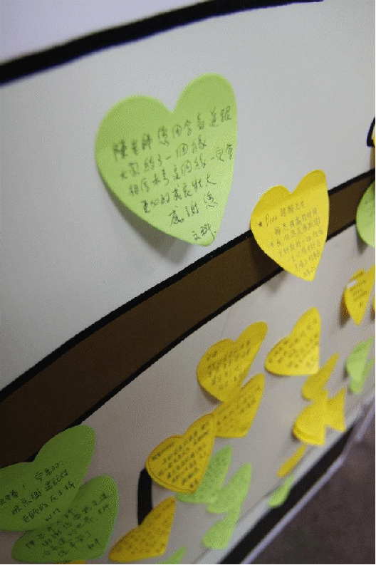
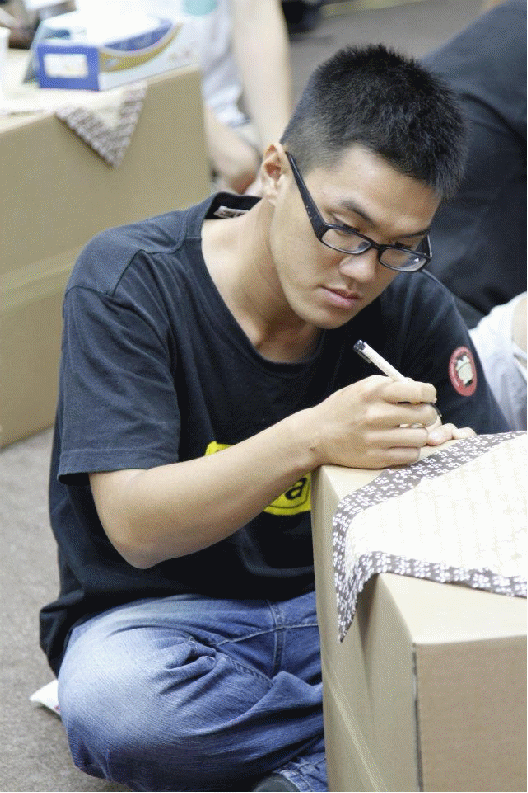

陳昌平師範感恩茶會
地點：國立台灣大學集思會議中心-洛克廳
台北市羅斯福路四段82號B1(國立台灣大學第二活動中心)
內容：1.陳昌平師範演武示範影片及影像放映。
2.與會來賓分享其與陳昌平師範之道場記憶與共同經驗
備註：本活動內容將做為【給永遠的狸貓先生及他的朋友】紀念專刊編輯內容。
留言文字
雖然你不擅表達情感，但你一直都很愛我們。
謝謝你。
孩兒不肖，但你一直都是我的驕傲。
兒 法銓
2011.8.27
謝謝老師帶我們進入合氣道的世界。留下很多美好的回憶～
無尾熊
很想念與你相處的每個時刻，失去了才更覺得以前你帶給我們的一切有多麼珍貴，懷念您…
王淇 2011.08.27
八年的合氣道路上，一路看著老師的背影持續走下去。
台大椰林 陳綿羊
狸貓老師：我們永遠懷念您與合氣道。
柯維明
Dear 陳老師：
在天堂HAPPY的練合氣道喔！
千言萬語，道不盡心中對您的懷念與感謝～您活潑的身影，將永遠留在我心中～
惠蒨
陳老師：
是您帶領我進入合氣道的世界，雖然您已經先離開，但要謝謝您，給了我們合氣道，伴我們一世。
Thank you & Miss you
品豪 2011.08.27
老師謝謝您！
建富
要繼續一直開心合氣到永遠ㄛ。
2011.08.27 喵
Dear 陳老師：
謝謝您讓我認識合氣道，也謝謝您所創造的美好回憶！
美綺2011.8.27
給親愛的陳老師：
感謝老師讓我的大學生活因為合氣道而多采多姿，因為合氣道認識我的另一半。拿到黑帶就偷懶沒練了，哈！真丟臉，但我會永遠懷念老師！
BY 四代目明財
給陳昌平老師：
謝謝你教給我們的精神！
洪浩肯
桃李滿天下的陳老師，請你放心，你的精神一定會傳承下去！
崧倫
永遠的合氣道。
軼名
老師
您教我的，我都會記得的！
彥良
To 陳老師
下次換我摔您嚕！
紹宇敬上
老師，
好想您
偉大的精神指標
小華手
好久不見的老師：
雖您已化為千風，與宇宙合氣，我會繼續練習的！
宗儒
DEAR 陳老師：
謝謝您，一切的一切。好喜歡您！！
湄翎 2011.08.27
老師：
今年三月我重新回到師大合氣道場練習，原以為還能接受您的指導，可惜您已在修養當中，如今沒有機會再在道場上見您，我會永遠記得那些年在師大道場接受您的指導，和學長姐、學弟妹們一起揮灑汗水，揮灑青春的快樂時光，祝您在天上一切安好！！
學生 映慈
老師您風雨無阻的為合氣道奉獻的精神會永遠存在我們的心中～
學生 建銘
感謝陳老師的指導，我的武術的道路將會一直走下去。
2011.8.17 吉兒
十分感謝。
～總是被摔得莫名其妙的師揚
老師好走~
軼名

謝謝昌平師，作育了許多喜愛合氣道的桃李。
慧英
九歲時認識您，十五歲因學業離開合氣道，二十歲又再次在師大遇見您，讓我又回到合氣道的路上，短暫離開完成學業，沒想老師您卻先走了，老師謝謝您，由您的身體力行，讓我了解合氣如此兼容並蓄，您永遠是我們的榜樣
師大95 奕緯
昌平兄：
下次見面我還要打你一拳，我讓你踢兩腳好了
蔡德敦
雖然我不是個認真的學生，但因為有您活力的身影，讓我一直與合氣道有聯繫，我會回來練習的。祝您一路好走。
By 浩庭
陳老師，謝謝你讓我踏入武術的第一步。
軼名
Dear 昌平師：
謝謝老師帶領我認識合氣道，雖然緣份短暫，但還是想說聲：老師，謝謝您！
學生 保毓敬上
陳老師：
雖然跟您相處時間很短，但您永遠是我景仰的目標。
漢元
Dear 陳老師：
因為有您～開啟了我與合氣道的緣份！您是位很棒的老師～謝謝您。
惠蒨
Dear: =目
一年太短，你肚裡技術太滿。
Love you & miss you~
咕
Miss you～
請保佑我順利調回台北～繼續練aikido～よし。
雅婷
親愛的老師：
老師認真的教學，讓每個人都受益良多，感謝老師讓合氣道的種子能在我們心中萌芽、長大。
謝謝您！
瑋隆
教練
如果沒有你的指導，我想我應該不會撐這麼久吧！祝你一路好走。
俊杰
陳老師
天地自然常合氣 師大合氣永昌平 合氣契合。
軼名
To 陳老師：
雖然您沒有與我們好好告別，但是您所為合氣道付出的心力，我們將會好好傳承下去，絕對不會白費！
By 新莊合氣道小珍珍 2011.8月
翻滾 旋轉笑嘻嘻的您腳步沉穩，溫柔敦厚，是我永遠的人生導師。
翠屏
陳昌平老師：
謝謝您帶我走進合氣道的世界，老師您辛苦了。
耕平
陳老師：
我好想你，真希望您能健康平安活著！
下輩子我一定要再當你的學生！！
秀治=)
陳老師：
感謝您在我們人生路上的陪伴。有您真好！
昭宇 100.8.27
Dear 狸貓先生：
雖然相處的時間不長，但還是很感謝老師教的一切，我會一直記得老師在道場上的身影！
亭葶 100.8.27
陳老師您用合氣道跟大家結了一個緣，相信未來這個緣一定會更加的成長壯大， 感謝您。
文科
旋轉！空翻！
很高興還記得老師的反手摔！
W.H

想跟您說的，相信您全部都知道，遺憾的是無法再度親口告訴您。